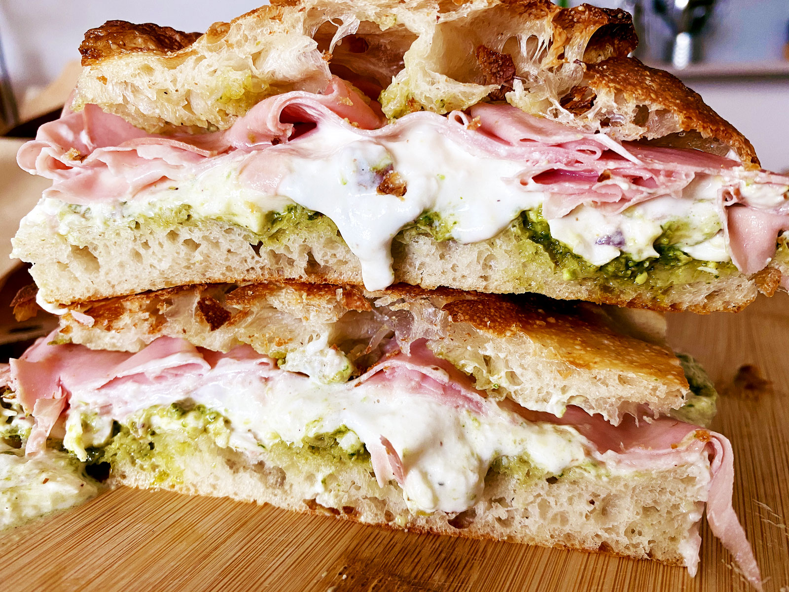
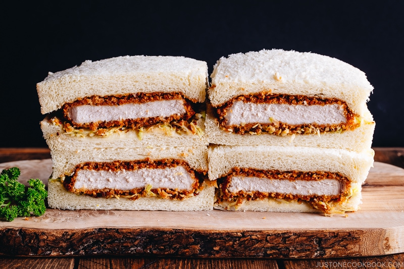
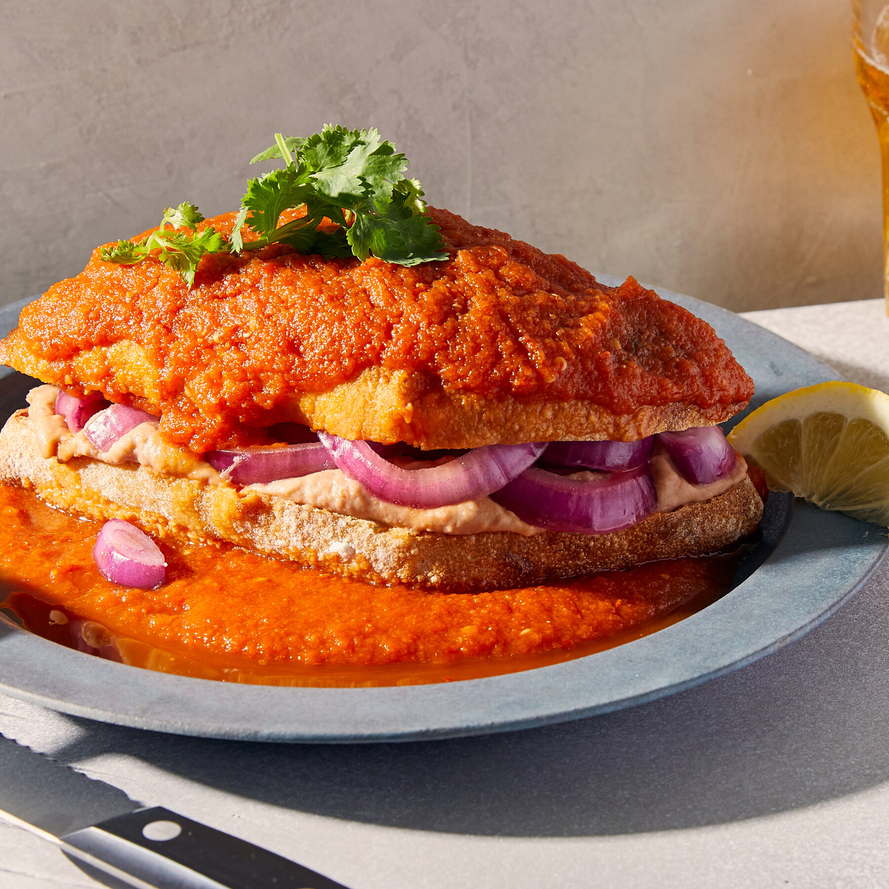

Italian Truffle Panino🇮🇹
 £8.95 A luxurious sandwich with truffle-infused prosciutto, creamy burrata cheese, and arugula on crispy ciabatta. Served with a drizzle of truffle oil.Tokyo Katsu Sando🇯🇵
£9.50 A Japanese masterpiece featuring panko-crusted Wagyu beef cutlet, tangy tonkatsu sauce, and shredded cabbage, all sandwiched between soft milk bread.
Torta Ahogada🇲🇽
A Mexican delight: crusty bolillo bread stuffed with slow-cooked pork, smothered in spicy tomato-chili sauce, and topped with pickled onions.
Parisian Croque Monsieur🇫🇷
A grilled French sandwich with layers of ham, Gruyère cheese, and béchamel sauce, toasted to golden perfection. Served with fries.